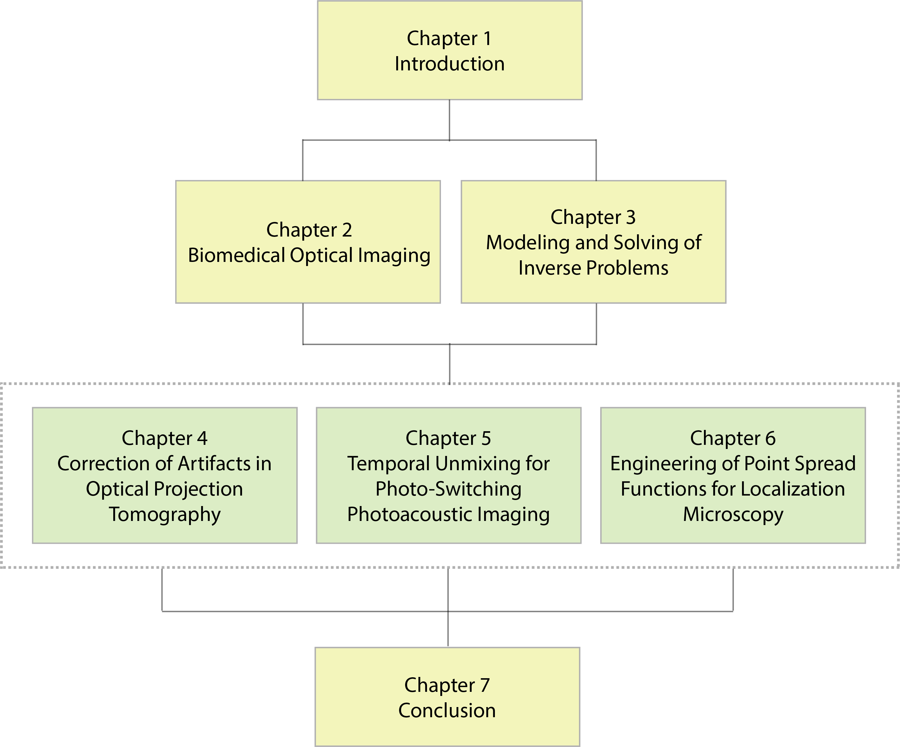
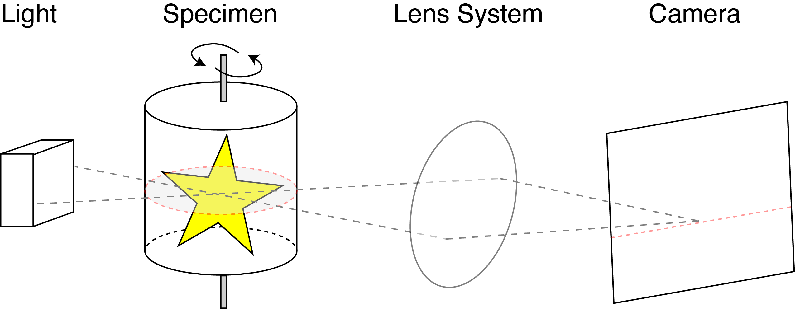
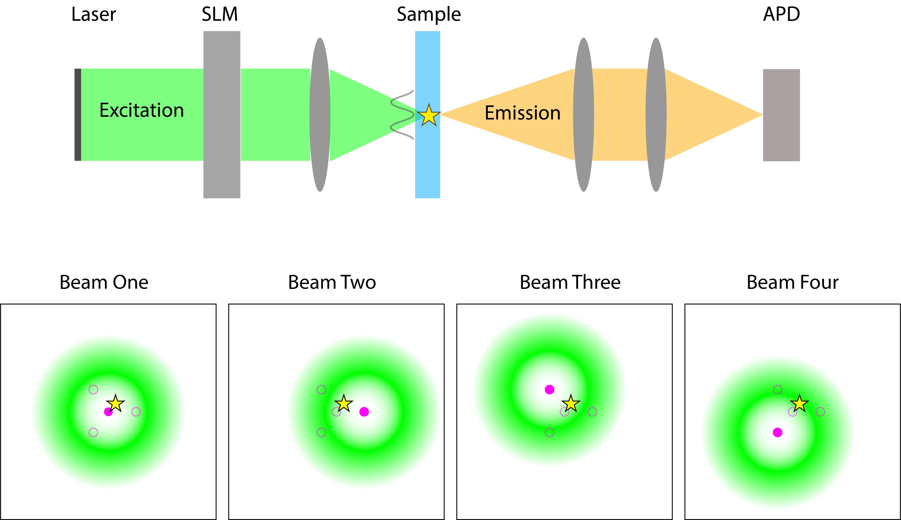

Contributions¶
This thesis follows the spirit of computational imaging and applies it to biomedical optical imaging. It focuses on specific tasks in three representative modalities: optical projection tomography (OPT), photoacoustic imaging (PAI), and single-molecule localization microscopy (SMLM). OPT and PAI break the optical diffusion limit and achieve remarkable imaging depths while maintaining high resolution. SMLM overcomes the optical diffraction limit and attains super-resolution.
In this section, we summarize the contributions of this thesis along with related publications. The outline of this thesis is shown in Fig. 3.


Fig. 3 Outline of the thesis.¶
Correction of Artifacts in Optical Projection Tomography¶
Context¶
OPT is a 3D tomographic technique that relies on a lens system to achieve microscopic resolution at millimeter or even centimeter depths [22]. The principle of OPT is similar to that of X-ray CT, where the sample is rotated to a set of angles to collect 2D projections on the camera plane (see Fig. 4). Particularly in OPT, the 3D sample is optically cleared and then immersed in a refractive-index-matching liquid, and a lens system focuses transmitted or emitted light onto the camera.


Fig. 4 Principle of OPT.¶
The mathematical model that describes such straight-ray projections is the Radon transform. Its discrete inversion formula, the filtered-backprojection algorithm, is commonly adopted to reconstruct a 3D sample from its 2D projections at a set of angles slice by slice. However, reconstructions often suffer from various artifacts, especially in low-cost OPT systems. As a result, these artifacts significantly deteriorate the image quality. They arise from the mismatch between the actual physical experiments of OPT and the standard imaging model, which disregards uncertainties in the motion of the specimen and does not take optical aberrations into account.
Contribution¶
Our contribution has been to investigate and better understand the root of artifacts in OPT images and to design effective calibration algorithms to remove them computationally. We focus on two types of artifacts. The first type is related to mechanical errors in the imaging system, and the second type depends on the quality of the match between refractive indices of the sample and immersion liquid.
Mechanical Artifacts¶
During an OPT experiment, a motorized stage is attached to the sample and repeats rotations by a small angular step to collect projection data. Ideally, the sample and the stage are well aligned around the rotation axis, and the motor drives the sample precisely to each angular position. In practice, unavoidable mismatches between the imaging system and the model lead to artifacts in the reconstruction. As a first contribution, we systematically document mechanical artifacts using a 3D description of the imaging system. We summarize and simulate the effects of different mechanical errors in the form of a catalog that lists the cause, appearance, characteristics, and existing correction methods. We then introduce a gradient-based calibration algorithm to recover the unknown system parameters that are used to reconstruct the final distortion-free volumetric image. We demonstrate the performance of our calibration algorithm on simulated bead phantoms and experimental datasets of a fluorescent textile fiber.
Related Publication (In collaboration with the Computational Bioimaging Group at Idiap)
Y. Liu, J. Dong, T. Pham, F. Marelli, and M. Unser, “Mechanical artifacts in optical projection tomography: Classification and automatic calibration,” Optics Continuum 1, 2577 (2022).
Optical Artifacts Due to Refractive-Index-Mismatch¶
In OPT experiments, the specimen is typically supported in a cylindrical agarose gel which is immersed in a glass cuvette of refractive-index-matching liquid to avoid refraction and favor straight light paths. However, despite the best effort of OPT practitioners, a residual mismatch of refractive indices may remain. This causes undesirable seagull-shaped artifacts in the reconstruction. As a second contribution, we derive a cone-beam model based on ray-optics to approximate the effect of this mismatch. We show that our forward model is able to reproduce the seagull artifacts and is valid under realistic experimental conditions. Then, we propose a fast correction method, via a common reconstruction algorithm for cone-beam geometry, using the open-source library tomosipo for 3D tomography [23]. We show that our approach successfully mitigates artifacts on experimental images of fluorescent beads.
Related Publication (In collaboration with the University of Applied Sciences of Western Switzerland)
Y. Liu, J. Dong, C. Schmidt, A. Boquet-Pujadas, J. Extermann, and M. Unser, “Artifacts in optical projection tomography due to refractive-index mismatch: Model and correction,” Optics Letters 47, 2618 (2022).
Temporal Unmixing for Photo-Switching Photoacoustic Imaging¶
Context¶

Fig. 5 Principle of photo-switching photoacoustic imaging.¶
Photoacoustic imaging is a coupled-physics modality that combines optical illumination and acoustic detection via the photoacoustic effect: the thermal energy absorbed by a sample upon illumination leads to elastic expansion of the tissue, generating a pressure field that propagates as acoustic waves [24, 25, 26]. PAI provides excellent optical contrast and overcomes the optical diffusion limit by detecting ultrasound, which experience significantly less scattering than photons during propagation through tissue.
Currently, efforts to further enhance specificity, sensitivity, and imaging depth remain active areas of research, with photo-switching PAI an emerging direction. This technique relies on photo-switching reporters which are proteins that exhibit different absorption spectra when illuminated with light of two distinctive wavelengths. During photo-switching, programmed illumination schedules switch the reporters to their ON and OFF states, which leads to temporally multiplexed acoustic signals that are sensed by the ultrasound transducer (see Fig. 5). Recent advances in temporal multiplexing employing novel photo-switching protein reporters [27] enable deep and high-contrast photoacoustic imaging with a promising potential for tumor characterization [28].
Contribution¶
Our goal is to develop a comprehensive temporal unmixing framework for photo-switching reporters combined with PAI, in collaboration with Helmholtz Zentrum München. This enables us to recover quantitative spatial maps of reporters from temporally multiplexed signals (see Fig. 6). The forward model of photoswitching PAI comprises two sequential steps: the photo-switching optical process and the acoustic process. They are linked through the photoacoustic effect.

Fig. 6 Temporal unmixing framework for photo-switching photoacoustic imaging.¶
Part I: Model-Based Unmixing from Intermediate PA Images¶
As a first contribution, we assume to have acoustic-reconstruction images at our disposal and propose a model-based variational framework to computationally unmix different species of reporters. It relies on a detailed mathematical description of the photo-switching mechanism, which models how relevant physical parameters such as the kinetic constants and the light fluence impact the switching signal. We introduce an algorithm that operates on images. It takes the form of an iterative inversion combined with tailored \(\ell_1\) and total-variation regularization to increase robustness to noise and to improve the unmixing quality. We show that our method is able to disentangle multiple spatially overlapping labels and recover continuous maps of quantities of interest on controlled phantoms and mice experiments using PA tomography. This part serves as the first step to the building of a comprehensive framework.
Related Publication
Y. Liu, J. Chuah, Y. Huang, A. C. Stiel, M. Unser, and J. Dong, “Model-based temporal unmixing towards quantitative photo-switching optoacoustic tomography,” Optics Express 33, 6216 (2025).
Part II: Global Unmixing Framework Directly from Acoustic Signals¶
As a second contribution, we extend the photo-switching model to include the acoustic process and develop a global unmixing framework. We derive an acoustic forward model based on the synthetic aperture technique originally from ultrasound imaging, and takes the transducer’s responses into account. We implement the forward models in the global pipeline as matrix-free operators for memory efficiency and adopt GPU acceleration for speed optimization. We then introduce a global inversion approach that allows us to perform temporal unmixing directly from acoustic measurements via a regularized iterative reconstruction algorithm. We validate our approach on a novel photo-switching photoacoustic mesoscopy setup.
Related Publication
Y. Liu, J. Chuah, M. Unser, and J. Dong. “A global inverse-problem approach to quantitative photo-switching optoacoustic mesoscopy”, arXiv preprint arXiv:2510.23739 (2025).
Engineering of Point Spread Functions for Localization Microscopy¶
Context¶
Fluorescent localization microscopy is a type of super-resolution microscopy (SRM) that achieves resolution down to several nanometers. SRM is an indispensable tool to reveal the structure, dynamics, and function of proteins in their cellular environment [29, 30].
The point spread function (PSF) is at the core of all SRM techniques. It describes the response of an imaging system to a point source and is closely related to the spatial resolution of a microscope. Breakthroughs in super-resolution are often linked to advances in the engineering of the PSF. For example, stimulated emission depletion (STED) microscopy relies on the ingenious engineering of the illumination beams to make the size of the PSF smaller than the diffraction limit via a second depletion laser [31].
In this chapter, we first look at a novel single-molecule localization-and-tracking technique at nanometer resolution, called MINFLUX [32]. Its innovation lies in the excitation pattern composed of a sequence of four donut beams instead of one beam as in other microscopes (See Fig. 7).


Fig. 7 Principle and excitation pattern of MINFLUX. SLM: spatial light modulator. APD: avalanche photon diode.¶
We then place the PSF within the broader context of single-molecule localization microscopy (SMLM), where accurate modeling and computation of the PSF are essential. Although a substantial body of literature exists on this topic, the use of inconsistent terminology and notation across studies obscures the connections between different models and parameterization approaches.
Contribution¶
Optimal Excitation Patterns in MINFLUX via PSF Engineering¶
As a first contribution, we present a theoretical study of the optimal illumination pattern via PSF engineering for MINFLUX. We use a statistical tool, the Cramér-Rao bound, which is commonly adopted in the SMLM community [33], to describe the localization precision. Moreover, we adopt a PSF-engineering approach and design a nonlinear optimization pipeline to identify optimal excitation patterns. Leveraging PyTorch’s automatic differentiation functionality, our method enables systematic explorations of excitation patterns tailored to MINFLUX. We show that when constrained to identical shapes, the well-established four-donut pattern achieves optimal performance. We further demonstrate that using two pairs of half-moon beams improves the localization precision by approximately twofold. Finally, we support these findings with a mathematical analysis that elucidates the optimality and its underlying physical intuition.
Related Publication (In collaboration with the Vienna BioCenter)
Y. Liu, J. Dong, J. Augusto Maya, F. Balzarotti, and M. Unser, “Point-spread-function engineering in MINFLUX: Optimality of donut and half-moon excitation patterns,” Optics Letters 50, 37 (2025).
A Unifying Framework for the Computation of Point Spread Functions¶
As a second contribution, we present a systematic framework to compute PSFs for localization microscopy. We revisit different PSF models and propose a unifying framework in which we prove the equivalence between the Fourier and Bessel approaches and detail a variety of correction factors applicable to both of them. In addition, we provide an efficient PyTorch implementation as an open-source library, PSF Generator. It enables us to benchmark the accuracy and computational speed of different models (scalar versus vectorial, Cartesian versus spherical parameterizations) and allows for an in-depth comparison of existing models. This work makes the precise computation of the PSF of high-NA systems more accessible to researchers from the fields of microscopy and deep learning.
Related Publication
Y. Liu, V. Stergiopoulou, J. Chuah, E. Bezzam, G.-J. Both, M. Unser, D. Sage, and J. Dong. “Revisiting PSF models: Unifying framework and high‐performance implementation,” Journal of Microscopy, 1-13, (2025).